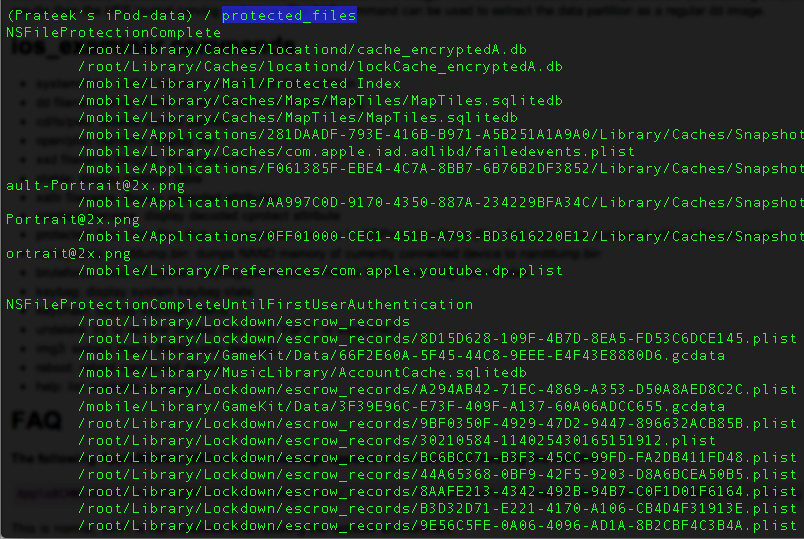
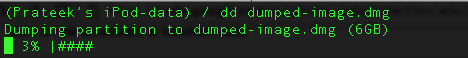

In the previous article, we looked at how we can boot a device using a custom ramdisk using Sogeti Data protection tools. In this article, we will look at how we can use some of their tools to gather information from the device like fetching the keychain information, dumping the entire filesystem or even bruteforcing the passcode.
Until the previous article, we had successfully set up a connection to the device using usbmux, ssh’ed into the device and had mounted the partitions. Here is what these partitions contain.
Now we are free to navigate inside these partitions and do whatever we want. As we can see, iphone data protection tools has put some scripts that we can use.
Let’s use the bruteforce script. Currently the ipod is protected with a passcode “1234”. This also means that the keychain is protected with this passcode (as discussed in previous articles) and hence if we want to dump the keychain, then we have to find the passcode. So let’s run this script. As you can see, it starts bruteforcing the passcode.
After some time, we can see that is was successfully able to figure out the passcode.

Click to Enlarge
We can also see that it writes these results to a plist file. This plist file is required by other python scripts, for e.g while dumping the keychain, the passcode is needed as the keychain information is protected with a passcode. There is another python script for bruteforcing the passcode stored inside the python_scripts directory inside the data protection tools repository.
Once it has figured out the passcode, it will create a folder with name as the UDID of your device and will store a plist file inside it containing information about the passcode and the keys that were derived. You can then use this plist file in other places where it is needed, for e.g while decrypting the keychain.
Here is the information contained in that plist file.
Please note that using an alphanumeric passcode will make it much more difficult for a successful bruteforce attack to be carried out and it will also protect the information in the keychain. However, most people are not aware of this and prefer to use a simple 4 digit numeric passcode.
Anyways, coming back to the device there is another script device_infos that dumps information about the device which contains information like the Serial number, the Mac address etc.

Click to Enlarge
One of the most important python scripts is the ios_examiner python script. However, while running it, i got an error related to unicode strings and i was able to modify the python script using the help of this link.
Now run the ios_examiner python script without any commands. You will be shown an interpreter now where you can type commands.
You can see the full set of commands just by typing help.
Just typing keychain will dump the keychain.
However, you will notice that it says Keybag state: locked and there are some items that don’t display (shown as ?). These are the items that have higher protection attributes (for e.g AfterFirstUnlock) and they require the device passcode in order to be decrypted. But then we had already figured out the passcode right ? Well yes, but we used a different python script and the plist file containing passcode information was stored somewhere else. The most simple way to go forward is to just use the bruteforce script from the interpreter, give it the passcode, allow it to save the plist file in the current location and now you can use the keychain script again.
Using the command protected_files will give you the files that are protected with protection attributes != NSProtectionNone.

You can also dump the current partition which will create a .dmg file that you can use to later mount the partition and explore it.

There is another shell script that will dump the partition for you. It saves the created .dmg file inside a folder with name as the UDID of the device.
Once the .dmg file is fully generated, you can just click on it to mount it. Now you can explore the filesystem whenever you want.
Now you can just reboot the device by issuing the reboot command and it will return the device back to its previous state. Make sure that the device is disconnected from you computer while doing so.
Conclusion
In this article, we looked at how we can use Sogeti data protection tools to gather various kinds of information from the device like keychain, protected files etc. We can also take a dump of the entire filesystem and analyze it later. This technique can be perfomed on any A4 device using a bootrom exploit (without jailbreaking it) and the device can then be rebooted to take it back to its normal state thereby preventing any normal user from knowing if anything happenned at all.
References
- Iphone-dataprotection – IOS Forensics tools
https://code.google.com/p/iphone-dataprotection/